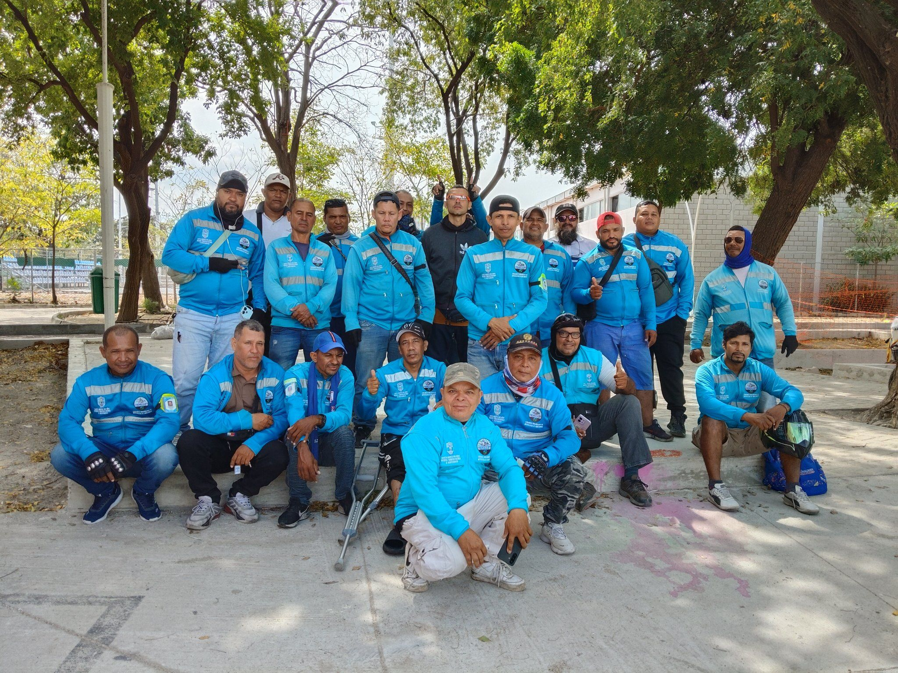

Servicio de domicilios con identidad verificada
Cada afiliado porta un carnet con código QR. Escanéalo para confirmar que la persona que te atiende es un miembro activo y de confianza de Coomosant.
🛡️ Este sistema protege tanto al cliente como al afiliado. Si el perfil no aparece aquí, el carnet no es oficial de Coomosant.
¿Cómo funciona?
-
Solicita el carnet
El afiliado te muestra su carnet físico oficial de Coomosant con foto y código QR personal.
-
Escanea el QR
Abre la cámara de tu celular y apúntala al código QR. Se abrirá esta página automáticamente.
-
Verifica el perfil
Compara la foto y el nombre del perfil con la persona frente a ti. El estado debe decir Activo ✓.
-
Recibe el servicio
¡Listo! Con el perfil verificado puedes recibir el servicio con total confianza y seguridad.
Movilidad y entregas con respaldo formal
Coomosant es una asociación formalmente constituida en Santa Marta, Magdalena. Agrupamos a domiciliarios y mototaxistas comprometidos con ofrecer un servicio seguro, puntual y responsable a la comunidad samaria.
Cada afiliado cumple un proceso de registro, verificación de identidad y aceptación de nuestro reglamento antes de recibir su carnet oficial.
100%
Afiliados verificados
Santa Marta, Magdalena

Información de contacto
Teléfono
Correo
Ciudad
Santa Marta, Magdalena